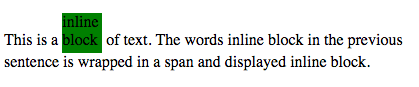

Display What?
Posted On: 09.27.14Displaying Inline vs. inline-block
An element that is displayed inline will not break the flow of the elements around it. For example:

The word “line” sits inline with the words surrounding it as you would expect. Any changed to the margins or padding will only change horizontal spacing and not affect spacing vertically. If we add a margin of 10px all the way around this element we will only see the space grow larger on the left and right and no change on the top or bottom.
Width is also ignored by an element that is displayed inline. In the image below you can see what happens when margin 10px and a width of 300px is called on an inline element
Inline-block:
An element set to inline-block will behave much in the same way as inline, with some very important differences. This type of display allows you, as the developer to set heights and widths and still remain within the flow of the elements surrounding it. The image below is an element that is displayed inline-block and has a height and width of 40px. You can see that the words remain somewhat inline, allow for widths and allow for vertical movement.
Takeaways :
display inline :
will not accept height and width - it will just be ignored by the browser.
display inline-block:
take a height and with and still stay somewhat inline.